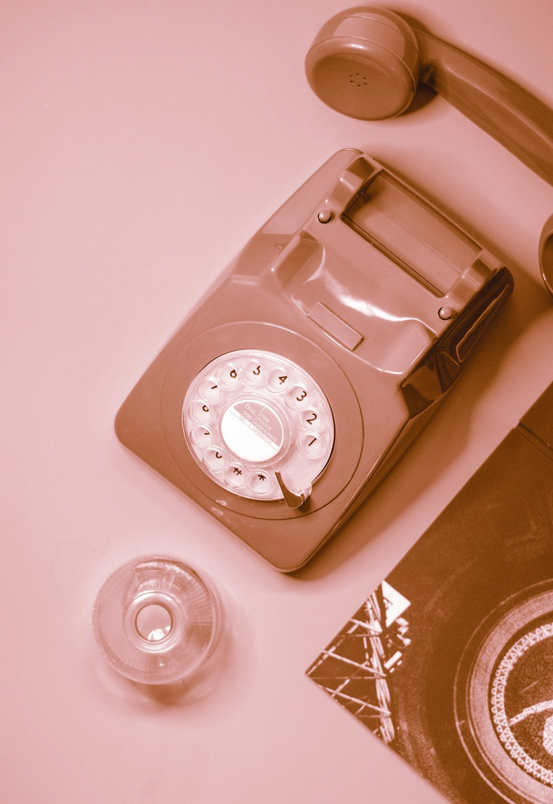

Less waste. More life.
Responsible recycling reduces the amount of electronic waste entering landfills and helps prevent pollution.
Phones you forgot. Cables you kept.
Give your unused electronics a useful next chapter.
Built by students. Rooted in Loni.
Try the recycling loop. Keep useful materials moving.

That old phone in your drawer still has a purpose. Let’s give it one.
Responsible recycling reduces the amount of electronic waste entering landfills and helps prevent pollution.
Recycling can recover useful metals, plastics and components that can enter new production cycles.
Small actions such as repairing, reusing and handing e-waste to proper collection channels make a difference.
Choose a category to start your demo pickup request.
Phones, tablets, smart devices and accessories.
Laptops, desktops, keyboards, mice and monitors.
Chargers, adapters, cables, earphones and USB devices.
Televisions, printers and other electronic appliances.
Separate unwanted electrical and electronic items from regular household waste.
Back up important files and remove personal data before handing over phones or computers.
Keep devices, cables and batteries organized. Do not dismantle hazardous components yourself.
Use an authorized collection/recycling channel or a responsible take-back program.
Working products may be reused or repaired; end-of-life material can be professionally recycled.
Demo directory for the CEP prototype. Replace these entries with verified local facilities before public deployment.
Note: The centers shown below are prototype/demo records. Verify an authorized facility before handing over e-waste.
Save your pickup details, then send the prepared request to EcoTech on WhatsApp.
Your demo Eco Points
145pointsA miniature prototype concept that accepts small e-waste items and awards points.
For a physical prototype, ESP32/Arduino, IR sensor, servo, LCD and optional load cell can be used.
A student initiative by the Information Technology team at Pravara Rural Engineering College, Loni.